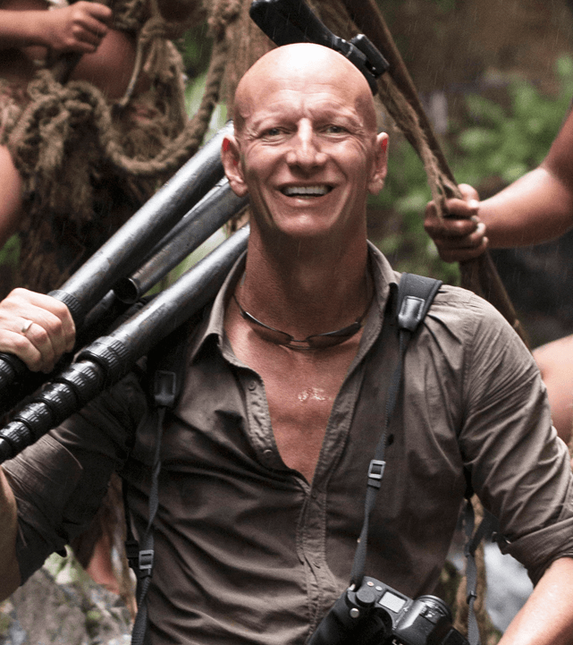
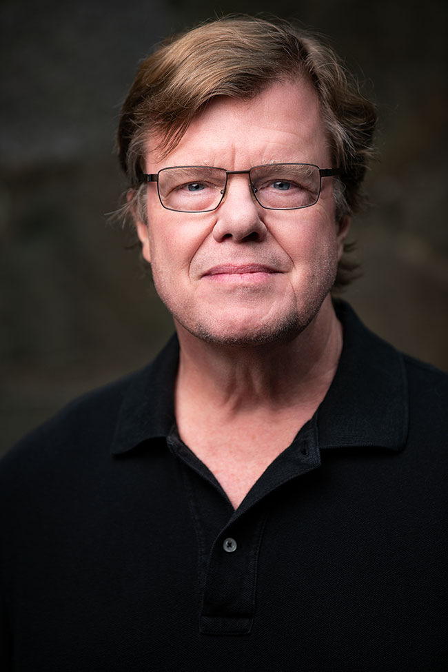
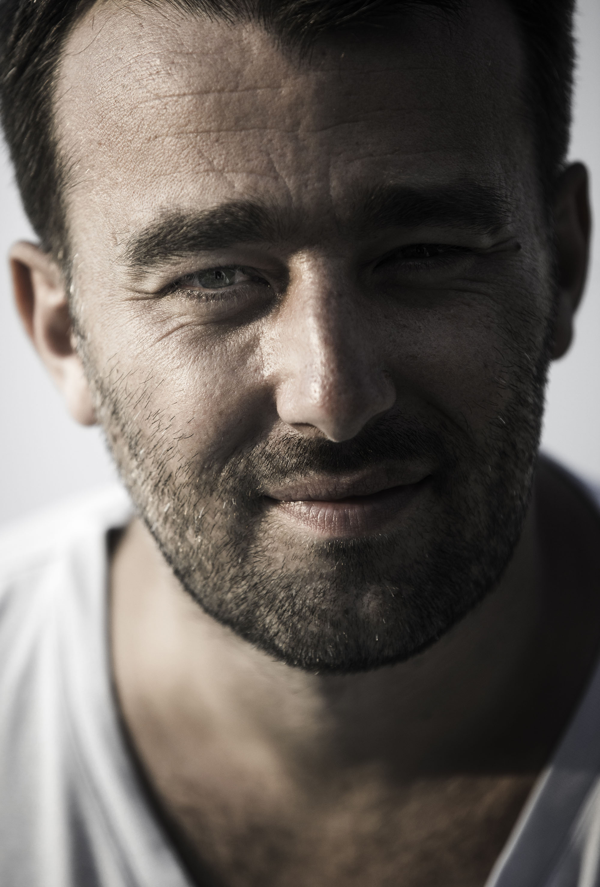

Jimmy Nelson
 |
Jimmy Nelson is a famous photographer from UK and he has been taking amazing photography since 1987. Since 2010 he has been working on a series 'Before they Pass Away' which has made him travel extensively to places like Vietnam, Tibet, Africa and so on. He visits tribal people and takes photos of them in their natural habitat, which is really amazing, since the emotions are beautifully captured in his photos. His part 1 series has won him several international awards and he is currently working on the part two series. Jimmy Nelson's photography works have been exhibited in many international museums and leading art galleries.
|
Joe McNally
 |
Joe McNally is an award winning photography with international recognition. He work is quite popular in more than 70 countries. According to his biography,"McNally is known world-wide as not only one of the top, technically excellent photographers of his generation, but his charming demeanor, confidence and humor make him a sought-after choice from CEO’s to celebrities to commercial and magazine clients alike. He is among the rare breed of photographer who has bridged the world between photojournalism and advertising, amassing an impressive commercial and advertising client list including FedEx, Sony, ESPN, Adidas, Land’s End, General Electric, Epson, MetLife, USAA, New York Stock Exchange, Lehman Brothers, PNC Bank, and the Beijing Cultural Commission". His photos have featured in top magazines like National Geographic, Life and so on. |
Rehahn
 |
Rehahn is a french photographer currently settled in Vietnam. He is quite popular for his photographs of India, Vietnam and Cuba. He published hs first book - Vietnam, Mosaic of Contrasts in 2014 which has more than 150 photographs of Vietnam which focuses specifically on the large diverse culture. According to his biography,"By capturing images of these exceptionally contrasting cultures, and collecting their traditional costumes and precious artifacts, he has built up the Precious Heritage Collection, which is now the core of the eponymous Gallery Museum". He is also known as a photographer who captures the souls of his models. Well, it's nit a literal meaning, it's just that he is able to portray the emations of the models in a soul touching way.
|